I have worked as a carpenter in the Estes Valley for twenty-five years, most of that time as a lead carpenter running job sites.
I build and rebuild decks, including the railings, stairs, and rot repair that usually come with them. I remodel rooms, which normally starts with demolition and framing before any finish work begins. I build cabinets and built-ins for spaces where stock sizes don't fit.
I also handle the repairs houses need at this elevation. That means doors and windows that have dropped out of square, trim and siding where water sits, and framing that has carried too much snow.
Carpentry work reaches me by word of mouth, so what follows is a sample rather than a full list. If what you need isn't here, call and ask.
Deck replacement
Replacing a deck that had rotted
This deck was built with the house. It had solid walls clad in the same siding, so there was no view through it. The owners had never liked it, and by the time they called me there was significant rot as well.
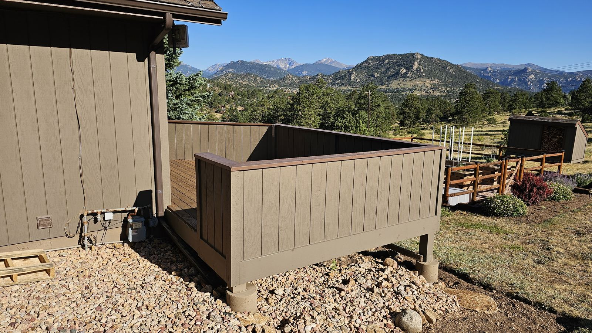
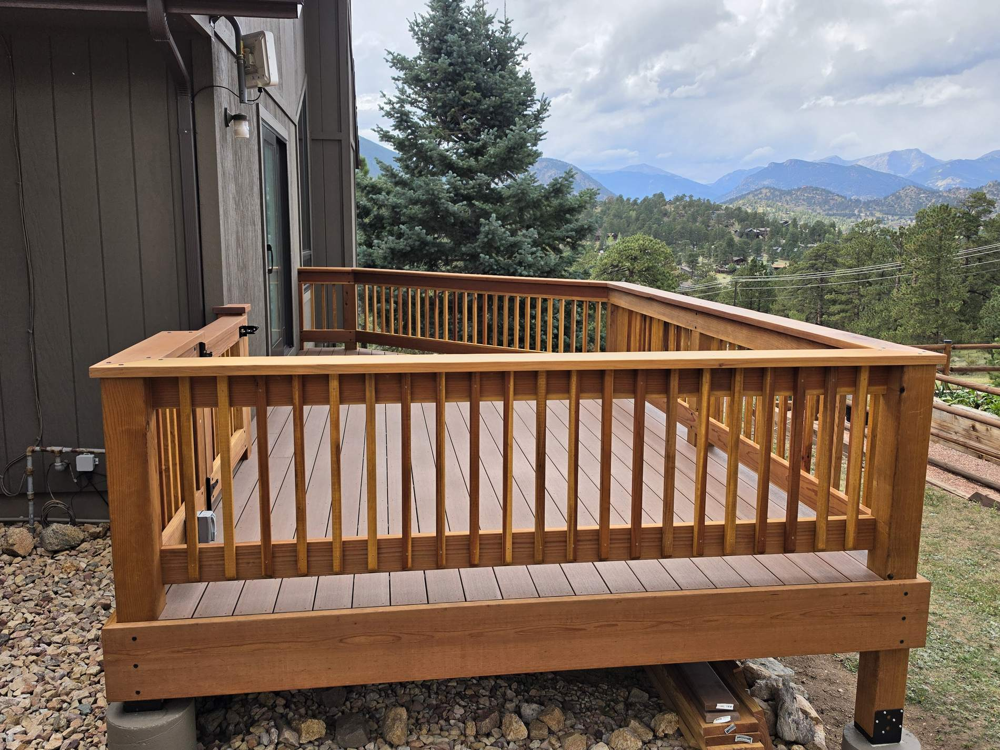
The new deck sits on new concrete piers and post bases. The frame and railing are cedar. The railing is open because the view is the reason to have a deck on that side of the house, and the old one blocked it.
The decking is TimberTech Advanced PVC with a Class A flame spread rating. That rating is now required for decking in this area. It is worth knowing before you price a deck in wood or in standard composite.
The same owners had me rebuild the larger deck on the front of this house thirteen years ago, when I was working for another company.
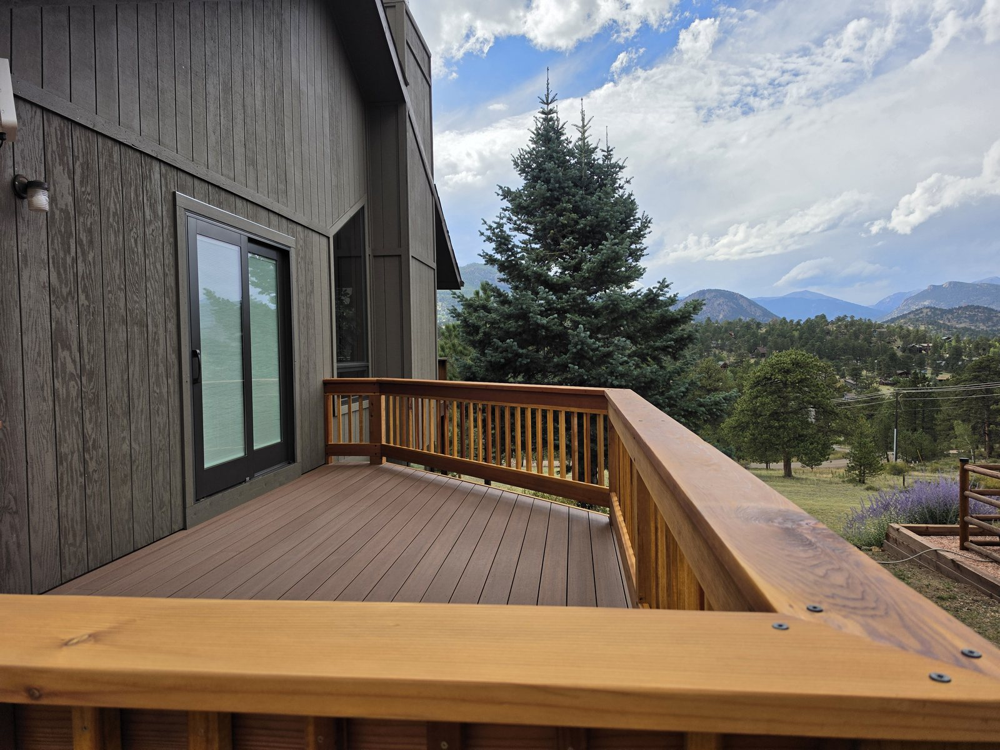
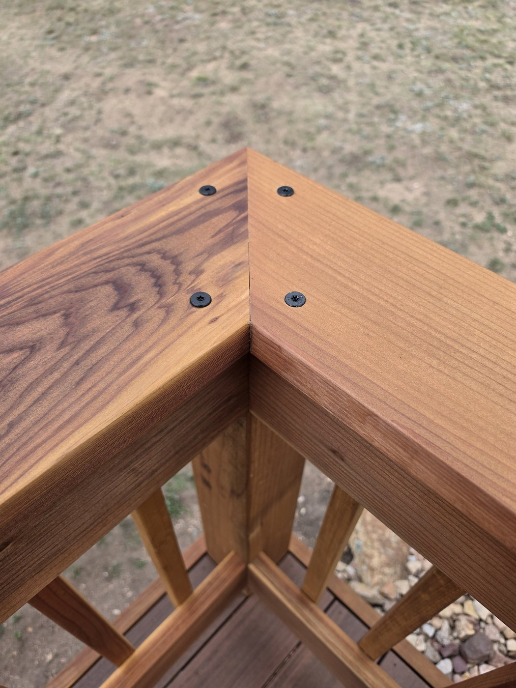
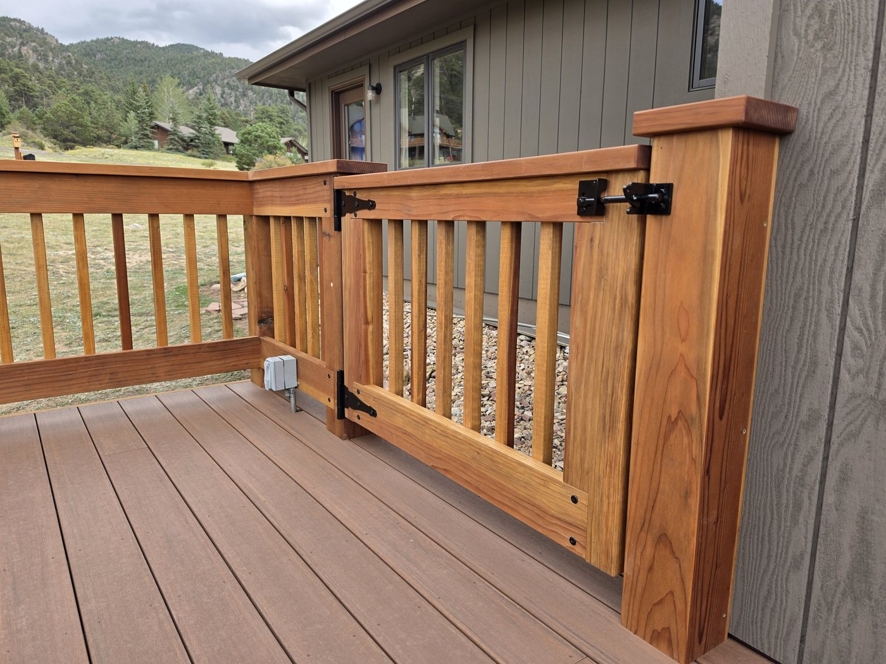
Remodel
A laundry room turned into a bunk room
The washer, dryer and countertops moved out to the garage, and the closet on the right was demolished. The room came back as sleeping space for four.
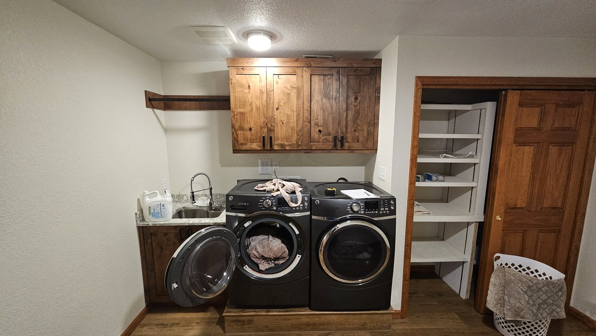
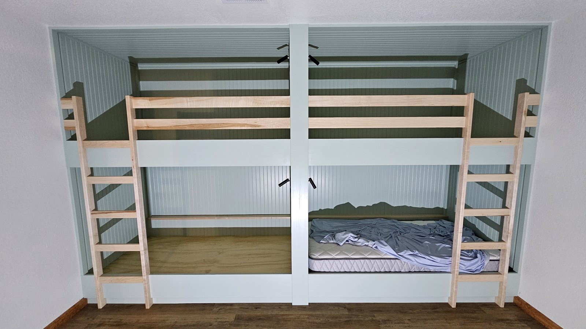
The bunks are built in place rather than assembled from stock units. That is the only way to use the full run of the wall and the full ceiling height.
The walls behind them are beadboard. Each bunk has its own reading light, and there is a ladder at either end so no one has to climb over anyone else.
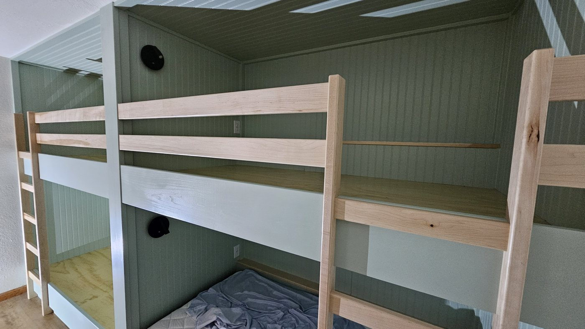
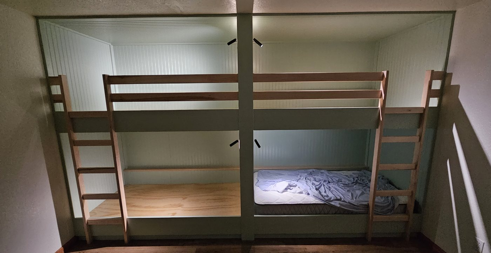
Decks
A deck built around a tree
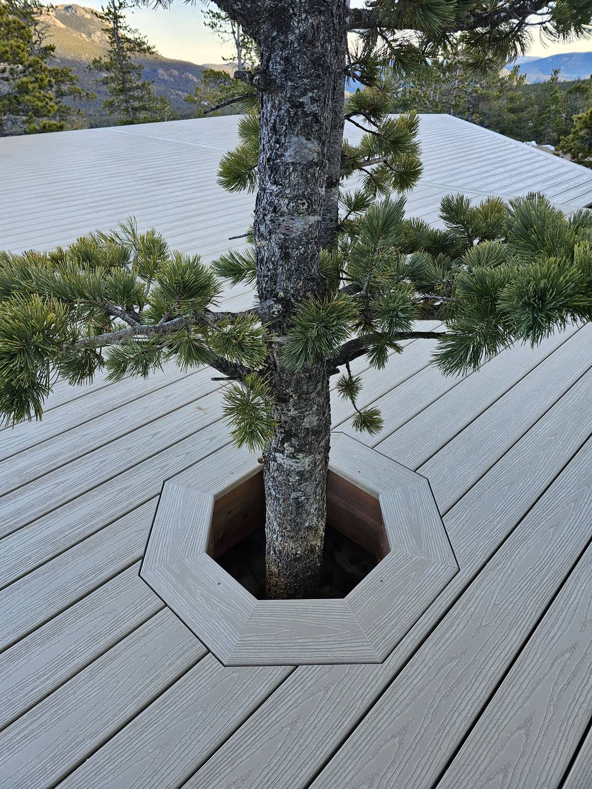
The pine was there first and the owners wanted to keep it. The opening is eight-sided because the decking is straight stock. Eight mitered segments frame it cleanly and leave no cut ends exposed.
There is six inches of clearance around the trunk on every side, for growth and for movement in the wind.
Earlier work
Interior finish work
These are from my years as a lead carpenter working for other companies, before Built & Connected. I did the work; the jobs belonged to those companies.
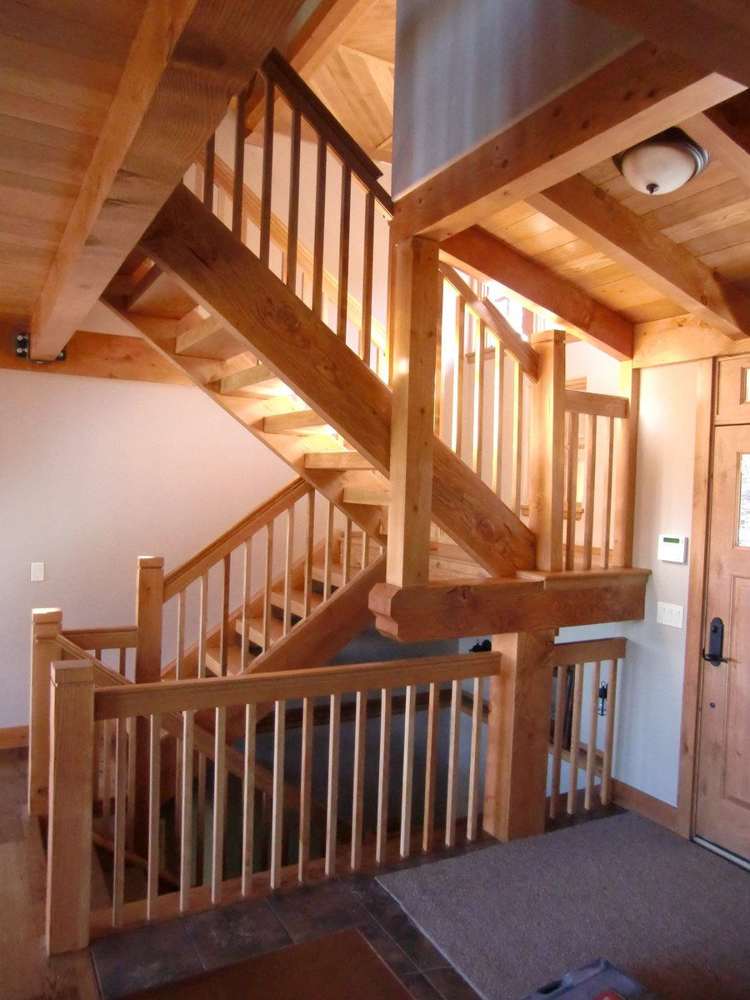
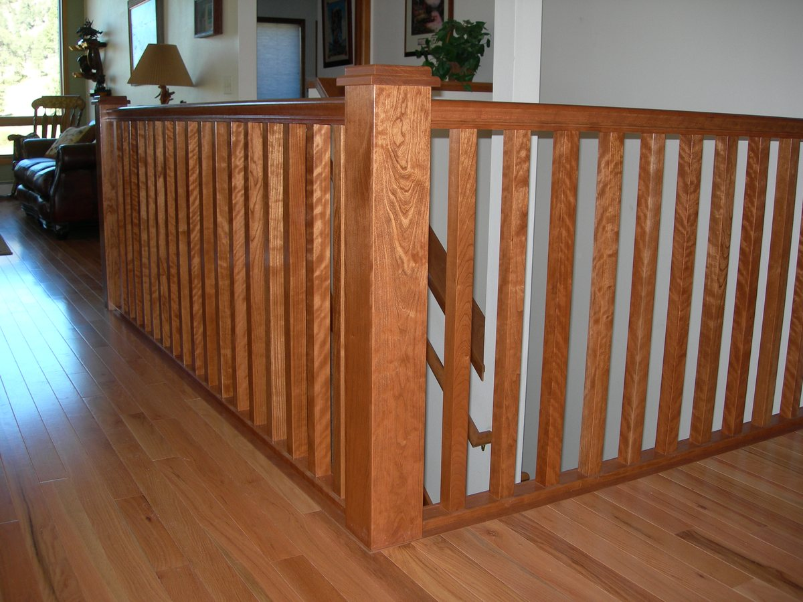
How it works
How a job runs
Before any work starts you get a detailed estimate. It breaks out the work, lists the materials, and gives the hours I expect it to take.
The final invoice follows the actual hours and the actual cost of the materials. I write the estimate to be accurate, and it usually is.
Materials go on your invoice at what I paid for them, with no markup. Every receipt is scanned, and they come to you with the final bill or at any point before it.
If I open something up and find a problem the estimate didn't cover, you hear about it that day, with what it changes, before I carry on.
The short version
- A look first — no charge, and sometimes the answer is that it doesn't need doing yet
- A detailed estimate — the work, the materials, and the hours I expect it to take
- Materials at cost — no markup on anything bought for the job
- Receipts included — scanned, and yours with the final bill or any time before it
- Changes reported the same day — not at the end, on the invoice
- Licensed trades where needed — electrical and plumbing go out
What I don't offer
- Whole-house builds and large additions
- Electrical and plumbing
- Roofing
- Drywall
If you need one of these, I'll point you to someone who does.
Call and tell me about the project
Tell me what it is, where it is, and when you would like it done. I'll come and look at it, and you'll have an estimate before any work starts.